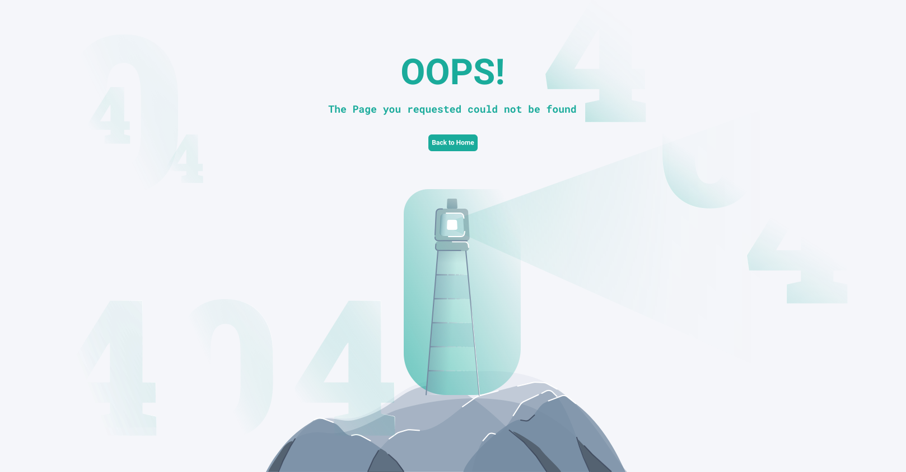
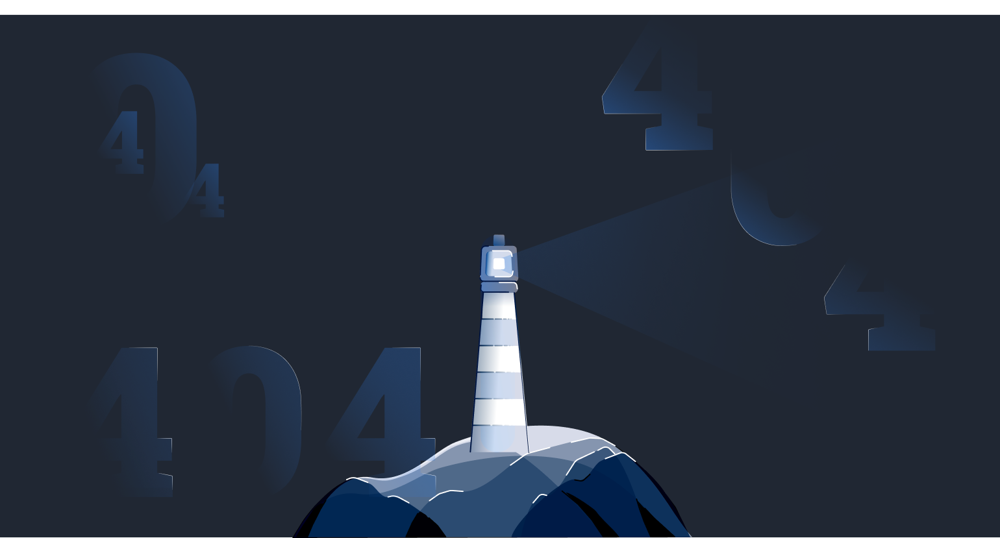

<div class="center-card" [ngClass]="{'card-center-dark':darkModeService.getDarkMode()}">
  <h1>OOPS!</h1>
  <p>{{ "The page you requested could not be found" }}</p>
  <button mat-button (click)="goHome()">{{ "Back to Home" }}</button>
</div>
